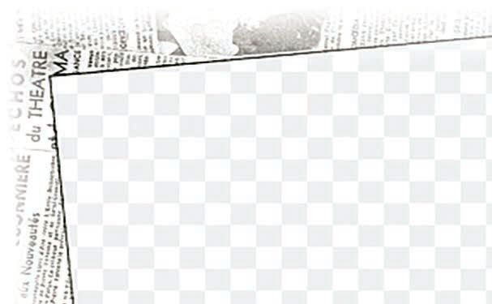
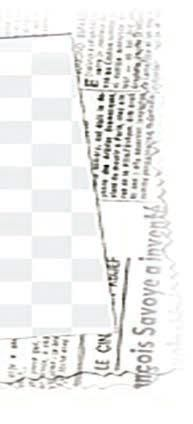
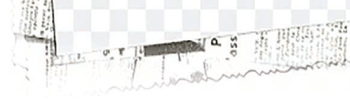
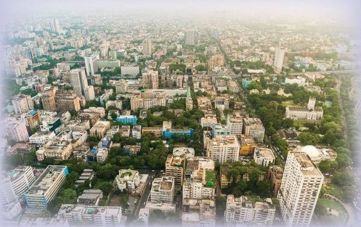

<!DOCTYPE html>
<html lang="ml">
<head>
  <meta charset="utf-8">
  <meta name="viewport" content="width=device-width, initial-scale=1.0">
  <title>Chapter 5 (Pages 87-104) - Class 9 Basic_science</title>
  <style>

:root {
  --bg-color: #fcfcfd;
  --card-bg: #ffffff;
  --text-color: #1e293b;
  --text-muted: #64748b;
  --primary-color: #0284c7;
  --primary-light: #e0f2fe;
  --border-color: #e2e8f0;
  --radius: 10px;
  --shadow: 0 4px 6px -1px rgb(0 0 0 / 0.05), 0 2px 4px -2px rgb(0 0 0 / 0.05);
}

body {
  font-family: -apple-system, BlinkMacSystemFont, "Segoe UI", Roboto, "Noto Sans Malayalam", "Manjari", "Gayathri", sans-serif;
  background-color: var(--bg-color);
  color: var(--text-color);
  line-height: 1.8;
  font-size: 1.1rem;
  margin: 0;
  padding: 0;
}

.container {
  max-width: 860px;
  margin: 0 auto;
  padding: 2.5rem 1.5rem 5rem 1.5rem;
}

header {
  margin-bottom: 2.5rem;
  padding-bottom: 1.5rem;
  border-bottom: 2px solid var(--border-color);
}

.badge-row {
  display: flex;
  gap: 0.5rem;
  margin-bottom: 0.75rem;
  flex-wrap: wrap;
}

.badge {
  display: inline-block;
  font-size: 0.75rem;
  font-weight: 700;
  text-transform: uppercase;
  letter-spacing: 0.05em;
  padding: 0.25rem 0.65rem;
  border-radius: 9999px;
  background: var(--primary-light);
  color: var(--primary-color);
}

.badge-medium {
  background: #fef3c7;
  color: #b45309;
}

.badge-class {
  background: #dcfce7;
  color: #15803d;
}

h1 {
  font-size: 2.1rem;
  font-weight: 800;
  margin: 0.5rem 0 1rem 0;
  line-height: 1.3;
  color: #0f172a;
}

.nav-bar {
  display: flex;
  justify-content: space-between;
  margin: 1.5rem 0;
  font-size: 0.95rem;
  flex-wrap: wrap;
  gap: 0.5rem;
}

.nav-bar a {
  color: var(--primary-color);
  text-decoration: none;
  font-weight: 600;
  padding: 0.5rem 1rem;
  border-radius: var(--radius);
  background: var(--card-bg);
  border: 1px solid var(--border-color);
  transition: all 0.2s ease;
}

.nav-bar a:hover {
  background: var(--primary-light);
  border-color: var(--primary-color);
}

.nav-bar .disabled {
  color: var(--text-muted);
  pointer-events: none;
  border-color: transparent;
  background: transparent;
}

.page-section {
  background: var(--card-bg);
  border: 1px solid var(--border-color);
  border-radius: var(--radius);
  box-shadow: var(--shadow);
  padding: 2rem;
  margin-bottom: 2.5rem;
}

.page-header {
  display: flex;
  align-items: center;
  justify-content: space-between;
  margin-bottom: 1.25rem;
  padding-bottom: 0.5rem;
  border-bottom: 1px dashed var(--border-color);
}

.page-number {
  font-size: 0.8rem;
  font-weight: 700;
  text-transform: uppercase;
  color: var(--text-muted);
  letter-spacing: 0.05em;
}

.page-content p {
  margin: 0 0 1.25rem 0;
  white-space: pre-wrap;
  word-break: break-word;
}

.page-content p:last-child {
  margin-bottom: 0;
}

.diagram-card {
  margin: 2rem 0;
  text-align: center;
  background: #f8fafc;
  border: 1px solid var(--border-color);
  border-radius: var(--radius);
  padding: 1rem;
  overflow: hidden;
}

.diagram-card img {
  max-width: 100%;
  height: auto;
  border-radius: calc(var(--radius) - 4px);
  display: inline-block;
  box-shadow: 0 2px 4px rgba(0,0,0,0.04);
}

.diagram-card figcaption {
  font-size: 0.85rem;
  color: var(--text-muted);
  margin-top: 0.75rem;
  font-weight: 500;
}

footer {
  margin-top: 3rem;
  padding-top: 2rem;
  border-top: 2px solid var(--border-color);
}

  </style>
</head>
<body>
  <div class="container">
    <header>
      <div class="badge-row">
        <span class="badge badge-class">Class 9</span>
        <span class="badge badge-medium">Malayalam Medium</span>
        <span class="badge">Basic science</span>
        <span class="badge">Part 1</span>
      </div>
      <h1>Chapter 5 (Pages 87-104)</h1>
      <div class="nav-bar"><a href="part_1_chapter_04.html">← Chapter 4 (Pages 67-86)</a><a href="index.html">☰ Index</a><span class="nav-bar disabled"></span></div>
    </header>
    <main>
      <section class="page-section" id="page-87">
  <div class="page-header"><span class="page-number">Page 87</span></div>
  <figure class="diagram-card" id="fig_ch05_p087_01"><figcaption>Figure fig_ch05_p087_01 (Page 87)</figcaption></figure>
  <figure class="diagram-card" id="fig_ch05_p087_02"><figcaption>Figure fig_ch05_p087_02 (Page 87)</figcaption></figure>
  <figure class="diagram-card" id="fig_ch05_p087_03"><figcaption>Figure fig_ch05_p087_03 (Page 87)</figcaption></figure>
  <figure class="diagram-card" id="fig_ch05_p087_04"><figcaption>Figure fig_ch05_p087_04 (Page 87)</figcaption></figure>
  <figure class="diagram-card" id="fig_ch05_p087_05"><figcaption>Figure fig_ch05_p087_05 (Page 87)</figcaption></figure>
  <figure class="diagram-card" id="fig_ch05_p087_06"><figcaption>Figure fig_ch05_p087_06 (Page 87)</figcaption></figure>
  <figure class="diagram-card" id="fig_ch05_p087_07"><figcaption>Figure fig_ch05_p087_07 (Page 87)</figcaption></figure>
  <figure class="diagram-card" id="fig_ch05_p087_08"><figcaption>Figure fig_ch05_p087_08 (Page 87)</figcaption></figure>
  <figure class="diagram-card" id="fig_ch05_p087_09"><figcaption>Figure fig_ch05_p087_09 (Page 87)</figcaption></figure>
  <figure class="diagram-card" id="fig_ch05_p087_10"><figcaption>Figure fig_ch05_p087_10 (Page 87)</figcaption></figure>
  <figure class="diagram-card" id="fig_ch05_p087_11"><figcaption>Figure fig_ch05_p087_11 (Page 87)</figcaption></figure>
  <figure class="diagram-card" id="fig_ch05_p087_12"><figcaption>Figure fig_ch05_p087_12 (Page 87)</figcaption></figure>
  <figure class="diagram-card" id="fig_ch05_p087_13"><figcaption>Figure fig_ch05_p087_13 (Page 87)</figcaption></figure>
  <figure class="diagram-card" id="fig_ch05_p087_14"><figcaption>Figure fig_ch05_p087_14 (Page 87)</figcaption></figure>
  <figure class="diagram-card" id="fig_ch05_p087_15"><figcaption>Figure fig_ch05_p087_15 (Page 87)</figcaption></figure>
  <figure class="diagram-card" id="fig_ch05_p087_16"><figcaption>Figure fig_ch05_p087_16 (Page 87)</figcaption></figure>
  <div class="page-content">
    <p>gŦDZ›¡z†–ctDZšƂ“‚sÇ</p>
    <p>z†–ctDZš”šȻś¡ź“DZ‚DZǘ–žxsā¡‘ˆŽ›x¡ƀ}šc</p>
    <p>s}›¢ǯc
z†††›ŽÚc
ŒŽ†›ŽÚc
z†–šů‚</p>
    <p>z†–ctDZš
”šȻś¡ź
–žxsāÇ</p>
    <p>ȼœˆŽ•š†ˆš‚c</p>
    <p>fžÅ£„ÅvDzc
Ƃšv}†
fNj›‚š†ˆš‚c</p>
    <p>s}›¢ǯc
hs“›‚NJŗ›Úž</p>
    <p>Ïz†›ă†š}“›Ğs¡šǡšŒ›Æ
ˆ›Ú¢ˆšsųˆŽ›•sdžƣÇ
‚œ“Ĭ›s›‚ăˆšų
s‚›ă ‚œ“Ĭ›
‚›Ž}›Úc‚šȽšŽ“cˆš}“cÐ
fǠšcˆ›ÚšÅ £“¢šƀ›ǫ›NJœ Ž¢Œ¢†šÄ</p>
    <p>ŽĬǰ¢šsŗsšĹ§ ¢sŽ‘Ĺ›Æ†›ųcfǠšŒ›¢Ú§ ¡‚š’›¢†Ǵ•›ă
¢ˆš f‘s¡‘ڝ›ăš§ £“¢šƀ›ǫ› ‚¡ź s“›‚›Æ ˆŽšŒÅ”›
ڝų‚§ 
sšvĞśÆ ¢sŽ‘Ĺ›¡ z†āÇ ¡‚š’›Æ¢‚}› fǠšŒ›¢Ú§
¢ˆš›Žų mų§ Œ†–›šÚ›¢Ƽš? †›“›Æ fǠšŒ›Æ†›ųc g‚Ž
–cǙš†ā‘›Æ†›ųcz†āÇ¢sŽ‘Ĺ›¢Úš§“Žų‚§
1941</p>
    <p>ǡšÄ¢Å§-&lt;</p>
    <p>87</p>
  </div>
</section><section class="page-section" id="page-88">
  <div class="page-header"><span class="page-number">Page 88</span></div>
  <figure class="diagram-card" id="fig_ch05_p088_01"><figcaption>Figure fig_ch05_p088_01 (Page 88)</figcaption></figure>
  <figure class="diagram-card" id="fig_ch05_p088_02"><figcaption>Figure fig_ch05_p088_02 (Page 88)</figcaption></figure>
  <figure class="diagram-card" id="fig_ch05_p088_03"><figcaption>Figure fig_ch05_p088_03 (Page 88)</figcaption></figure>
  <figure class="diagram-card" id="fig_ch05_p088_04"><figcaption>Figure fig_ch05_p088_04 (Page 88)</figcaption></figure>
  <figure class="diagram-card" id="fig_ch05_p088_05"><figcaption>Figure fig_ch05_p088_05 (Page 88)</figcaption></figure>
  <figure class="diagram-card" id="fig_ch05_p088_06"><figcaption>Figure fig_ch05_p088_06 (Page 88)</figcaption></figure>
  <figure class="diagram-card" id="fig_ch05_p088_07"><figcaption>Figure fig_ch05_p088_07 (Page 88)</figcaption></figure>
  <figure class="diagram-card" id="fig_ch05_p088_08"><figcaption>Figure fig_ch05_p088_08 (Page 88)</figcaption></figure>
  <figure class="diagram-card" id="fig_ch05_p088_09"><figcaption>Figure fig_ch05_p088_09 (Page 88)</figcaption></figure>
  <figure class="diagram-card" id="fig_ch05_p088_10"><figcaption>Figure fig_ch05_p088_10 (Page 88)</figcaption></figure>
  <figure class="diagram-card" id="fig_ch05_p088_11"><figcaption>Figure fig_ch05_p088_11 (Page 88)</figcaption></figure>
  <figure class="diagram-card" id="fig_ch05_p088_12"><figcaption>Figure fig_ch05_p088_12 (Page 88)</figcaption></figure>
  <div class="page-content">
    <p>e DZšc</p>
    <p>Œ†š}Ä¡‚š’›š‘›s¡‘
Íe‚›ƒ›¡Ĺš’›š‘›sÇÎ
mų“›‘›ă ¢sŽ‘c£s}›ă
¢šsc
¢sŽ‘Ĺ›ÆpŽˆ‚›“šÚ§
iˆ¢šu›ăš§s}›¢Ǯ¡Ĺš’›š‘›s¡‘
ˆŽŒšÅ”›Úų‚§
Íe‚›ƒ›¡‚š’›š‘›sÇÎ</p>
    <p>†ƴ››Ğǫ ˆŅ“šÅĹ NJŗ›ă“¢Ƽš? e‚›ƒ›¡Ĺš’›š‘›sÇ
mųƂ¢šuc†›āÇm“›¡}¡ÿ›c¢sЛН¢Ĭš?
e‚›ƒ›¡Ĺš’›š‘›sÇ gų§ ¢sŽ‘œ –Œž—Ĺ›¡ź ‹šuŒš›
Œš› †uŽ÷šŒ¢‹„Œ¢†DZ n‚§ ¢Œt›c gų§ e‚›ƒ›¡Ĺš’›
š‘›s‘Ĭ§ e“Å pŽ ¢„”ŧ †›ųc Œ¡ǮšŽ ¢„”¢ĹÚ§
¡‚š’›Æ¢‚}›¢ˆšsų‚›¡ź sšŽāÇm¡ŦƼšŒš“ǰ?
sž}‚Æ“›“ŽāÇsžĞ›¢xÅڝŒ¢Ƽš
 z ¡Œă¡ƀĞ“ŽŒš†c
 z
iÅų–šŒž—›sˆ„“›
 z
 z</p>
    <p></p>
    <p>¢sŽ‘Ĺ›¡s}›¢ǯxŽ›Ņc
Œš‘c –c–šŽ›Úų z†‚ sžĞš pŽ ¢„”œ¢Šš c ‹š• ‹žŒ›”šȻc mų›“
¡}e}›Ǚš†Ĺ›Æ¢sŽ‘œÅmųpǮ–Ǵ‚ǴŒšsų‚›† ŒƠ‚¡ųg“›¡}†›ų§
s}›¢Ǯā‘cƂ“š–ā‘cäDZŒšÚ›ǫˆŽœ‚››ǫšŅsÇ–c‹“›ă›Žų
¢sŽ‘Ĺ›Æ†›ų§Ɩ›Ğœ•§ ¢sš‘†››¢Ú§ ¢sŽ‘œ¡Ž†›ÅŠŰˆžÅ“ce}›Œ¡Ĺš’›š‘›
s‘š›iˆ¢šu›ă›ŽųŒ DZ¢sŽ‘Ĺ›Æ†›ųc ¡‚ÚÄ¢sŽ‘Ĺ›Æ†›ųcgŽˆ‚šc
†žǮšĬ›¡źf„DZˆs‚››ÆŒŠšÅƂ¢„”ā‘›¢Ú§pǮ¡ƀĞ‚c–cv}›‚“Œšs}›
¢ǮāÇ †}ų›Žų gښ‘“›Æ ‚¡ų Œš‘›sÇ gŦDZ›¡ “ĆuŽā‘š
Œc¡Š ¢Ššc¡Š ¡x£ų Œŝš–§ ¡sšÆÚĹ sÆÚĞ Ɨ›‚}ā›g}ā‘›
¢Ú§ ¢zš› e¢†Ǵ•›ă§ “DZšˆsŒš› ¢ˆš‚c z†–ctDZš}›Ǚš†ŒšÚ› x†šŃ
s‚Ʃ§i„š—ŽŒš§g‚›†§ ¢”•Œš§ulj§Ƃ¢„”ā‘›¢Úǫ“DZšˆss}›¢Ǯc
¢sŽ‘Ĺ›Æ †›ųĬšsų‚§ ¢šsś¡ “›s–†sšŽDZā‘›Æ ŒųšÚc †›Æڝų
“›¢„” ŽšzDZā‘›¢Úc Œš‘›sÇ¢zš›Úc Ǚ›Ž‚šŒ–Ĺ›†Œš›mś›ĞĬ§
“›„DZš‹DZš–“ce†ŠŰ¡‚š’›c ¢‚}›ǫs}›¢Ǯā‘š§¢sŽ‘Ĺ›Æ†›ų§ sž}
‚ciĬšsų‚§sš†¡sm–§m†DZž–›šź§ ‚}ā›ŽšzDZā‘›¢Úš§
†›“›Æ šŽš‘c¢ˆÅs}›¢ų‚§</p>
    <p>88</p>
    <p>–šŒž—DZ”šȻc-</p>
  </div>
</section><section class="page-section" id="page-89">
  <div class="page-header"><span class="page-number">Page 89</span></div>
  <figure class="diagram-card" id="fig_ch05_p089_01"><figcaption>Figure fig_ch05_p089_01 (Page 89)</figcaption></figure>
  <figure class="diagram-card" id="fig_ch05_p089_02"><figcaption>Figure fig_ch05_p089_02 (Page 89)</figcaption></figure>
  <figure class="diagram-card" id="fig_ch05_p089_03"><figcaption>Figure fig_ch05_p089_03 (Page 89)</figcaption></figure>
  <figure class="diagram-card" id="fig_ch05_p089_04"><figcaption>Figure fig_ch05_p089_04 (Page 89)</figcaption></figure>
  <figure class="diagram-card" id="fig_ch05_p089_05"><figcaption>Figure fig_ch05_p089_05 (Page 89)</figcaption></figure>
  <figure class="diagram-card" id="fig_ch05_p089_06"><figcaption>Figure fig_ch05_p089_06 (Page 89)</figcaption></figure>
  <figure class="diagram-card" id="fig_ch05_p089_07"><figcaption>Figure fig_ch05_p089_07 (Page 89)</figcaption></figure>
  <figure class="diagram-card" id="fig_ch05_p089_08"><figcaption>Figure fig_ch05_p089_08 (Page 89)</figcaption></figure>
  <figure class="diagram-card" id="fig_ch05_p089_09"><figcaption>Figure fig_ch05_p089_09 (Page 89)</figcaption></figure>
  <figure class="diagram-card" id="fig_ch05_p089_10"><figcaption>Figure fig_ch05_p089_10 (Page 89)</figcaption></figure>
  <figure class="diagram-card" id="fig_ch05_p089_11"><figcaption>Figure fig_ch05_p089_11 (Page 89)</figcaption></figure>
  <div class="page-content">
    <p>gŦDZ›¡z†–ctDZšƂ“‚sÇ</p>
    <p>Œs‘›Æ †Æs››Ğǫ sšŽā‘›Æ †›ųc s}›¢Ǯc mŦš
¡ų§ Œ†–›šÚǰ
pŽƂ¢„”ŧ †›ų§ Œ¡ǮšŽƂ¢„”¢ĹÚ§ Ǚ›ŽŒš¢š ‚šÆښ›s
Œš¢šz†āÇŒš›ĹšŒ–›Úų‚›¡†š§s}›¢Ǯcmų§ˆų‚§
Ƃ š†ŒšcŽĬ‚ŽĹ›ǫs}›¢Ǯā‘šǫ‚§</p>
    <p>f‹DzŦŽs}›¢ǯc</p>
    <p>ŽšzDzšŦŽs}›¢ǯc</p>
    <p>ŽšzDZš‚›Åśڝǫ›ǫ s}›¢Ǯ
ā¡‘ f‹DZŦŽs}›¢ǮāÇ mų
ˆų ¢sŽ‘Ĺ›¡ z†āÇ
¡‚š’›Æ¢‚}› ŒǮ –cǙš†ā‘›
¢Ú§ ¢ˆšsų‚cg‚Ž–cǙš
†ā‘›Æ†›ųcz†āÇ¢sŽ‘Ĺ›
¢Ú§ “Žų‚cf‹DZŦŽs}›¢Ǯ
ś†§i„š—ŽŒš§</p>
    <p>ŽšzDZś¡ź e‚›Åś s}ųǫ
s}›¢Ǯā¡‘ ¡ˆš‚¡“ ŽšzDZš
ŦŽs}›¢Ǯcmų§ˆųgŦDZ
›Æ†›ų§ulj§ŽšzDZā‘›¢Úc
ž¢šˆDZÄ ŽšzDZā‘›¢Úc z†
āÇ¢ˆšsų‚§ŽšzDZšŦŽs}›¢
Ǯś†§i„š—ŽŒš§</p>
    <p>s}›¢ǮcpŽƂ¢„”Ĺ›¡źz†–ctDZšv}†›ÆŒšǮŒĬšÚų
“›“› ‚Žc s}›¢Ǯā‘š§ x“¡} †Æs››Ž›Úų‚§ e“
n¡‚š¡Ú s}›¢Ǯā‘š§ mų§ ‚›Ž›ă›Ě§ sž}‚Æ i„š—Ž
āÇs¡ĬśˆĞ›s¡ƀ}Ĺž
z “›¢„”ŽšzDZā‘›Æ¢zš›¡xƭųŒš‘›sÇ
z
z</p>
    <p>¢sŽ‘Ĺ›¡†›Åƣš¢Œt›Æ¢zš›¡xƭųiĹ¢ŽŦDZÄ¡‚š’›š‘›sÇ
ˆ~†š“”DZś†š›“›¢„”ŽšzDZā‘›Æ¢ˆšsų“›„DZš¶ƒ›sÇ
f‹DZŦŽs}›¢Ǯc
z</p>
    <p>ŽšzDZšŦŽs}›¢Ǯc
z</p>
    <p>z†††›ŽÚcŒŽ†›ŽÚc
pŽƂ¢„”¡Ĺz†–ctDZš“‘ÅăsÚšÚų‚›†ǫƂ š†
¡ƀĞv}sā‘š§e“›}¡Ĺz†††›ŽÚc ŒŽ†›ŽÚc
ǡšÄ¢Å§-&lt;</p>
    <p>89</p>
  </div>
</section><section class="page-section" id="page-90">
  <div class="page-header"><span class="page-number">Page 90</span></div>
  <figure class="diagram-card" id="fig_ch05_p090_01"><figcaption>Figure fig_ch05_p090_01 (Page 90)</figcaption></figure>
  <figure class="diagram-card" id="fig_ch05_p090_02"><figcaption>Figure fig_ch05_p090_02 (Page 90)</figcaption></figure>
  <figure class="diagram-card" id="fig_ch05_p090_03"><figcaption>Figure fig_ch05_p090_03 (Page 90)</figcaption></figure>
  <figure class="diagram-card" id="fig_ch05_p090_04"><figcaption>Figure fig_ch05_p090_04 (Page 90)</figcaption></figure>
  <figure class="diagram-card" id="fig_ch05_p090_05"><figcaption>Figure fig_ch05_p090_05 (Page 90)</figcaption></figure>
  <figure class="diagram-card" id="fig_ch05_p090_06"><figcaption>Figure fig_ch05_p090_06 (Page 90)</figcaption></figure>
  <figure class="diagram-card" id="fig_ch05_p090_07"><figcaption>Figure fig_ch05_p090_07 (Page 90)</figcaption></figure>
  <figure class="diagram-card" id="fig_ch05_p090_08"><figcaption>Figure fig_ch05_p090_08 (Page 90)</figcaption></figure>
  <figure class="diagram-card" id="fig_ch05_p090_09"><figcaption>Figure fig_ch05_p090_09 (Page 90)</figcaption></figure>
  <figure class="diagram-card" id="fig_ch05_p090_10"><figcaption>Figure fig_ch05_p090_10 (Page 90)</figcaption></figure>
  <figure class="diagram-card" id="fig_ch05_p090_11"><figcaption>Figure fig_ch05_p090_11 (Page 90)</figcaption></figure>
  <figure class="diagram-card" id="fig_ch05_p090_12"><figcaption>Figure fig_ch05_p090_12 (Page 90)</figcaption></figure>
  <figure class="diagram-card" id="fig_ch05_p090_13"><figcaption>Figure fig_ch05_p090_13 (Page 90)</figcaption></figure>
  <figure class="diagram-card" id="fig_ch05_p090_14"><figcaption>Figure fig_ch05_p090_14 (Page 90)</figcaption></figure>
  <div class="page-content">
    <p>e DZšc</p>
    <p>z†–ctDZ›¡q¢Žšf›ŽĹ›†czœ“¢†š¡}z†›Ú
ų“Ž¡}mĴŒš§z†††›ŽÚ§</p>
    <p>”›”ŒŽ
†›ŽÚ§</p>
    <p>pŽ Ƃ¢‚DZs Ƃ¢„”ŧ  †›DŽ›‚–ŒĹ›Æ z†–ctDZ
›¡ q¢Žš f›ŽĹ›c ŒŽ›Úų“Ž¡} mĴŒš§
ŒŽ†›ŽÚ§</p>
    <p>pŽ“Å•Ĺ›Æ
f›Žczœ“¢†š¡}
ǫz††ā‘›Æ
pŽ“Ǡ›†ǫ›Æ
ŒŽ¡ƀ}ų”›”
ڑ¡}mĴ¡Ĺ
”›”ŒŽ†›ŽÚ§
(Infant Mortality)
mųˆų</p>
    <p>z†††›ŽÚc ŒŽ†›ŽÚc‚ƣ›ǫ“DZ‚DZš–Ĺ›š§ z†
–ctDZš“‘ÅăsÚšÚų‚§z†††›ŽÚ§ ssc ŒŽ
†›ŽÚ§iŽsc ¡xƭųe“Ǚ›Æz†–ctDZsų
ŒŽ†›ŽÚ›¡†ÚšÇ z†††›ŽÚ§ iŽ¢ƠšÇ z†–ctDZ
“Å ›Úų
gŦDz›¡z††ŒŽ†›ŽÚ§ 1901-2001
60</p>
    <p>30
20</p>
    <p>z†† ŒŽ
“Å•c †›ŽÚ§
†›ŽÚ§
1901 49.2
42.6
1911 48.1
47.2
1921 46.4
36.3
1931 45.2
31.2
1941 39.9
27.4
1951 41.7
22.8
1961 41.2
19
1971 37.1
14.8
1981 33.9
12.5
1991 29.5
9.8
2001
26
9</p>
    <p>1991-96</p>
    <p>1981-91</p>
    <p>1971-81</p>
    <p>1961-71</p>
    <p>1951-61</p>
    <p>1941-51</p>
    <p>1931-41</p>
    <p>0</p>
    <p>1921-31</p>
    <p>10
1996-2001</p>
    <p>pŽŽšzDZ¡Ĺ
iÅų”›”ŒŽ
†›ŽÚc ŒšĶŒ
Ž†›ŽÚcf
ŽšzDZś¡źˆ›ųš
ښ“Ǚ¡}c
„šŽ›ŝDZś¡źc
–žxsā‘š§</p>
    <p>40</p>
    <p>1911-21</p>
    <p>(Maternal mortality
rate)mųˆų</p>
    <p>50</p>
    <p>1901-11</p>
    <p>pŽ“Å•c†}ڝų
f›ŽcƂ–“
ā‘›ÆŒŽ›Úų
Ȼœs‘¡}mĴ¡Ĺ
ŒšĶŒŽ†›ŽÚ§</p>
    <p>RATE PER 1000 POPULATION</p>
    <p>ŒšĶŒŽ†›ŽÚ§</p>
    <p>†Æs››ĞǫˆĞ›sc÷š‰c†›Žœä›ă§
gŦDZ›¡ z†††›ŽÚ§   ŒŽ†›ŽÚ§
mų›“¡}Ƃ“‚sÇs¡ĬŞ2011
¡–Ä––§ƂsšŽcgŦDZ›¡z†††›ŽÚc
ŒŽ†›ŽÚcs¡Ĭŝs
Source: SRS Bulletin, Registrar General of
India, 2016, National Commission on
Population, Government of India.
website: http://populationcommission.nic.in/facts1.htm#</p>
    <p>z††ŒŽ Ǚ›‚›“›“ŽÚÚ›¡ź ՂDZ‚ g“ ŠŰ¡ƀĞ
n z Ä –› s ¡‘  e › › ڝ ų ‚› ¡†  f NJ › 㛠Ž› ڝ ų 
gŦDZ}ڌǫ pНŒ›Ú ŽšzDZā‘›c z††ŒŽāÇ
ƒš–ŒcŽz›ǡÅ¡xƭ¡Œų§ †›Œce†”š–›Úų</p>
    <p>90</p>
    <p>–šŒž—DZ”šȻc-</p>
  </div>
</section><section class="page-section" id="page-91">
  <div class="page-header"><span class="page-number">Page 91</span></div>
  <figure class="diagram-card" id="fig_ch05_p091_01"><figcaption>Figure fig_ch05_p091_01 (Page 91)</figcaption></figure>
  <figure class="diagram-card" id="fig_ch05_p091_02"><figcaption>Figure fig_ch05_p091_02 (Page 91)</figcaption></figure>
  <figure class="diagram-card" id="fig_ch05_p091_03"><figcaption>Figure fig_ch05_p091_03 (Page 91)</figcaption></figure>
  <figure class="diagram-card" id="fig_ch05_p091_04"><figcaption>Figure fig_ch05_p091_04 (Page 91)</figcaption></figure>
  <figure class="diagram-card" id="fig_ch05_p091_05"><figcaption>Figure fig_ch05_p091_05 (Page 91)</figcaption></figure>
  <figure class="diagram-card" id="fig_ch05_p091_06"><figcaption>Figure fig_ch05_p091_06 (Page 91)</figcaption></figure>
  <figure class="diagram-card" id="fig_ch05_p091_07"><figcaption>Figure fig_ch05_p091_07 (Page 91)</figcaption></figure>
  <figure class="diagram-card" id="fig_ch05_p091_08"><figcaption>Figure fig_ch05_p091_08 (Page 91)</figcaption></figure>
  <figure class="diagram-card" id="fig_ch05_p091_09"><figcaption>Figure fig_ch05_p091_09 (Page 91)</figcaption></figure>
  <figure class="diagram-card" id="fig_ch05_p091_10"><figcaption>Figure fig_ch05_p091_10 (Page 91)</figcaption></figure>
  <figure class="diagram-card" id="fig_ch05_p091_11"><figcaption>Figure fig_ch05_p091_11 (Page 91)</figcaption></figure>
  <figure class="diagram-card" id="fig_ch05_p091_12"><figcaption>Figure fig_ch05_p091_12 (Page 91)</figcaption></figure>
  <figure class="diagram-card" id="fig_ch05_p091_13"><figcaption>Figure fig_ch05_p091_13 (Page 91)</figcaption></figure>
  <figure class="diagram-card" id="fig_ch05_p091_14"><figcaption>Figure fig_ch05_p091_14 (Page 91)</figcaption></figure>
  <div class="page-content">
    <p>gŦDZ›¡z†–ctDZšƂ“‚sÇ</p>
    <p>÷šŒƂ¢„”ŧz††ŒŽāÇŽz›ǡÅ¡x¢ƭĬ¡‚“›¡}š§ ?
†uŽˆĞƂ¢„”ŧz††ŒŽāÇŽz›ǡÅ¡x¢ƭĬ¡‚“›¡}š§ ?</p>
    <p>ˆsÅă“DZš › 䚌c sšš“Ǚš“DZ‚›š†c mų›“  ŒŽ
†›ŽÚ›¡†mā¡†Šš ›Úų¡“ų§xÅă¡xƪ§s›ƀ§‚ƭššÚs
¡–Ä––§ ›¢ƀšÅЧ ƂsšŽc gŦDZ›¡c ¢sŽ‘Ĺ›¡c
z†††›ŽÚc ŒŽ†›ŽÚcs¡Ĭś ¢†šĞ§ŠÚ›Æs›Úž
2011</p>
    <p>z†–šů‚
pŽ Ƃ¢„”¡Ĺ Ƃ š† –šŒž—›s–šƠśs v}sā¡‘
Ƃ‚›†› š†c¡xƭųpųš§e“›}¡Ĺz†–šů‚
pŽƂ¢„”ŧ†›DŽ›‚sš‘“›Æe ›“–›Úųz†ā‘¡}f¡smĴŒš§
fƂ¢„”¡Ĺz†–ctDZmųšÆq¢Žšx‚ŽNJs›¢šŒœǮÅƂ¢„”ŝǫ
”Žš”Ž›z†–ctDZ¡z†–šů‚(Density of Population)mųˆų</p>
    <p>2011 ¡–Ä––§ ›¢ƀšÅЧ ˆŽ›¢”š</p>
    <p>›ă§ z†–ctDZ z†–šů‚ mų›“
sž}‚ǫ–cǙš†āÇs“ǫ–cǙš†āÇmų›“s¡Ĭś
xšÅЧ‚ƭššÚ›㚖›ÆƂ„Å”›ƀ›Úž
gŦDZ›Æ z†–šů‚›Æ Ƃs}Œš Ƃš¢„”›s “DZ‚DZš–āÇ
†›†›Æڝų2011 ¡–Ä––§ƂsšŽcz†–šů‚›ÆƗ›
nǮ“c Œų›ceŽšxÆƂ¢„”§nǮ“c ˆ›ų›Œš§
iÅų z†–šů‚ǫ Ƃ¢„”¡Ĺ
–šŒž—›sƂLjāÇ m¡ŦƼšŒš§ ?
ˆĞ›sˆžÅŜsŽ›Úž
‚ǠšǙŒ›Ƽš§Œ
z Œ›†œsŽc
z z–c‹Žs“§
z fÇڞĞc
z</p>
    <p>z
z</p>
    <p>ǡšÄ¢Å§-&lt;</p>
    <p>91</p>
  </div>
</section><section class="page-section" id="page-92">
  <div class="page-header"><span class="page-number">Page 92</span></div>
  <figure class="diagram-card" id="fig_ch05_p092_01"><figcaption>Figure fig_ch05_p092_01 (Page 92)</figcaption></figure>
  <figure class="diagram-card" id="fig_ch05_p092_02"><figcaption>Figure fig_ch05_p092_02 (Page 92)</figcaption></figure>
  <figure class="diagram-card" id="fig_ch05_p092_03"><figcaption>Figure fig_ch05_p092_03 (Page 92)</figcaption></figure>
  <figure class="diagram-card" id="fig_ch05_p092_04"><figcaption>Figure fig_ch05_p092_04 (Page 92)</figcaption></figure>
  <figure class="diagram-card" id="fig_ch05_p092_05"><figcaption>Figure fig_ch05_p092_05 (Page 92)</figcaption></figure>
  <figure class="diagram-card" id="fig_ch05_p092_06"><figcaption>Figure fig_ch05_p092_06 (Page 92)</figcaption></figure>
  <figure class="diagram-card" id="fig_ch05_p092_07"><figcaption>Figure fig_ch05_p092_07 (Page 92)</figcaption></figure>
  <figure class="diagram-card" id="fig_ch05_p092_08"><figcaption>Figure fig_ch05_p092_08 (Page 92)</figcaption></figure>
  <figure class="diagram-card" id="fig_ch05_p092_09"><figcaption>Figure fig_ch05_p092_09 (Page 92)</figcaption></figure>
  <figure class="diagram-card" id="fig_ch05_p092_10"><figcaption>Figure fig_ch05_p092_10 (Page 92)</figcaption></figure>
  <figure class="diagram-card" id="fig_ch05_p092_11"><figcaption>Figure fig_ch05_p092_11 (Page 92)</figcaption></figure>
  <figure class="diagram-card" id="fig_ch05_p092_12"><figcaption>Figure fig_ch05_p092_12 (Page 92)</figcaption></figure>
  <figure class="diagram-card" id="fig_ch05_p092_13"><figcaption>Figure fig_ch05_p092_13 (Page 92)</figcaption></figure>
  <figure class="diagram-card" id="fig_ch05_p092_14"><figcaption>Figure fig_ch05_p092_14 (Page 92)</figcaption></figure>
  <figure class="diagram-card" id="fig_ch05_p092_15"><figcaption>Figure fig_ch05_p092_15 (Page 92)</figcaption></figure>
  <figure class="diagram-card" id="fig_ch05_p092_16"><figcaption>Figure fig_ch05_p092_16 (Page 92)</figcaption></figure>
  <div class="page-content">
    <p>e DZšc</p>
    <p>gŦDZ›Æ x› –cǙš†ā‘›Æ z†–ctDZ “‘¡Ž
iÅųc ŒǮ§x›–cǙš†ā‘›Æ“‘¡Ž‚š’§ųc†›Æ
ڝų‚›¡źsšŽāÇm¡ŦƼšŒš›Ž›Úšc?
z
z
z</p>
    <p>sšš“Ǚ
‹žƂsDZ‚›
z‹DZ‚</p>
    <p>z</p>
    <p>ŒĴ›†āÇ</p>
    <p>z
z</p>
    <p></p>
    <p>ȼœˆŽ•š†ˆš‚“c ”›”›cuš†ˆš‚“c
ȻœˆŽ•š†ˆš‚c z†–ctDZ¡} “‘Å㚆›ŽÚs¡‘c
e‚›¡źˆŽ›šŒ¡Ĺc –Ǵš œ†›Úųz†–ctDZ¡}ȻœˆŽ
•š†ˆš‚c z†††›ŽÚ§ ŒŽ†›ŽÚ§ s}›¢Ǯc mų›“¡
Šš ›Úų
pŽ†›DŽ›‚sš‘“›ÆpŽƂ¢‚DZsƂ¢„”¡Ĺf›ŽcˆŽ•ŶšÅÚ§
f†ˆš‚›sŒš›mŅȻœs‘Ĭ§mų§sÚšÚų‚›¡†š§ȻœˆŽ
•š†ˆš‚c(Sex Ratio)mųˆų‚§
0-6 “–›†ǫ›Æ 1000 fÃsĞ›sÇÚ§ f†ˆš‚›sŒš› mŅ ¡ˆÃ
sĞ›sÇmų§sÚšÚų‚›¡†š§ ”›”›cuš†ˆš‚c(Child Sex Ratio)
mųˆų‚§</p>
    <p>gŦDz›¡sų ȼœˆŽ•š†ˆš‚“c
”›”›cuš†ˆš‚“c1961-2011
“Å•c
1961
1971
1981
1991
2001
2011
Source:</p>
    <p>ȼœˆŽ•š†ˆš‚c ”›”›cuš†ˆš‚c
941
930
934
927
933
940</p>
    <p>960
964
962
945
927
914</p>
    <p>*Census of India 2011 (Provisional) Government of India</p>
    <p>ˆĞ›s†›Žœä›ă§ gŦDZ›¡ ȻœˆŽ•š†ˆš‚Ĺ›¡c ”›”›cuš†
ˆš‚Ĺ›¡cƂ“‚s¡‘ڝ›ă§xÅă¡xƪ§ s›ƀ§‚ƭššÚž¢sŽ‘
ś¡ź ȻœˆŽ•š†ˆš‚“c ”›”›cuš†ˆš‚“c ‚ƣ›Æ ‚šŽ‚ŒDZc
¡xƭs</p>
    <p>92</p>
    <p>–šŒž—DZ”šȻc-</p>
  </div>
</section><section class="page-section" id="page-93">
  <div class="page-header"><span class="page-number">Page 93</span></div>
  <figure class="diagram-card" id="fig_ch05_p093_01"><figcaption>Figure fig_ch05_p093_01 (Page 93)</figcaption></figure>
  <figure class="diagram-card" id="fig_ch05_p093_02"><figcaption>Figure fig_ch05_p093_02 (Page 93)</figcaption></figure>
  <figure class="diagram-card" id="fig_ch05_p093_03"><figcaption>Figure fig_ch05_p093_03 (Page 93)</figcaption></figure>
  <figure class="diagram-card" id="fig_ch05_p093_04"><figcaption>Figure fig_ch05_p093_04 (Page 93)</figcaption></figure>
  <figure class="diagram-card" id="fig_ch05_p093_05"><figcaption>Figure fig_ch05_p093_05 (Page 93)</figcaption></figure>
  <figure class="diagram-card" id="fig_ch05_p093_06"><figcaption>Figure fig_ch05_p093_06 (Page 93)</figcaption></figure>
  <figure class="diagram-card" id="fig_ch05_p093_07"><figcaption>Figure fig_ch05_p093_07 (Page 93)</figcaption></figure>
  <figure class="diagram-card" id="fig_ch05_p093_08"><figcaption>Figure fig_ch05_p093_08 (Page 93)</figcaption></figure>
  <figure class="diagram-card" id="fig_ch05_p093_09"><figcaption>Figure fig_ch05_p093_09 (Page 93)</figcaption></figure>
  <figure class="diagram-card" id="fig_ch05_p093_10"><figcaption>Figure fig_ch05_p093_10 (Page 93)</figcaption></figure>
  <figure class="diagram-card" id="fig_ch05_p093_11"><figcaption>Figure fig_ch05_p093_11 (Page 93)</figcaption></figure>
  <figure class="diagram-card" id="fig_ch05_p093_12"><figcaption>Figure fig_ch05_p093_12 (Page 93)</figcaption></figure>
  <div class="page-content">
    <p>gŦDZ›¡z†–ctDZšƂ“‚sÇ</p>
    <p>ȻœˆŽ•š†ˆš‚Ĺ›†§ ȻœˆŽ•–Ŧ›‚š“Ǚ›Æ“›
ˆÿĬ§ pŽ Ƃ¢„”¡Ĺ z†–ctDZš“‘Åă Ƃ“x›Úų‚›†c
z†–ctDZ¡}“ƀcsÚšÚų‚›†c ȻœˆŽ•š†ˆš‚c
iˆ¢šu›Úų
2011 ¡–Ä––§ƂsšŽcgŦDZ›¡c¢sŽ‘Ĺ›¡c
ȻœˆŽ•š†ˆš‚cmŅš§?</p>
    <p>sųȻœˆŽ•š†ˆš‚cm¡Ŧš¡Ú–šŒž—›sƂLjā‘š›
Ž›ÚǰǔǏ›Úų‚§?
z
z</p>
    <p>gŦDZ›Æ ȻœˆŽ•š†ˆš‚c ¡Œă¡ƀ}Ĺš†ǫ NJŒāÇ †œ‚›f¢šu§ Œ¢ųšĞ
“ă›ĞĬ§‚š¡’ƀų¢Œts‘›Æ NJŗ¢sůœsŽ›ÚšÄ–ÅښŽ›¢†š}§ ”ˆšÅ”
¡xƪ›ĞĬ§
z</p>
    <p>¡ˆÃsĞ›s‘¡}e“sš”ā¡‘ڝ›ă§e“¢Šš c“‘Åŝs
z ¡ˆÃsĞ›sÇÚ§ Œ›săf¢ŽšuDZ–cŽä“c“›„DZš‹DZš–“c†Æss
z Ȼœs¡‘c¡ˆÃsĞ›s¡‘c”šÞœsŽ›Ús</p>
    <p>fžÅ£„ÅvDzc
mƼš ŽšzDZā‘c e“›¡}ǫ z†‚¡} f¢ŽšuDZc “Å ›ƀ›
ڝų‚›†c ŒŽ†›ŽÚ§ sƩų‚›†Œš› Ƃŀ›Úų pŽ
Ƃ¢„”¡Ĺ z†–ctDZš“‘Åă sÚšÚų‚›†ǫ Ƃ š†
v}sŒš§fÅ£„ÅvDZc
pŽšÇ”Žš”Ž›mŅsšczœ“›ă›Ž›ÚcmųsÚš§fžÅ£„ÅvDZc
mųˆų‚§pŽ†›DŽ›‚Ƃ¢„”¡Ĺq¢Žš Ƃš“›‹šuś¡c
ŒŽ†›ŽÚ›¡źe}›Ǚš†Ĺ›š§fžÅ£„ÅvDZcsÚšÚų‚§</p>
    <p>ǡšÄ¢Å§-&lt;</p>
    <p>93</p>
  </div>
</section><section class="page-section" id="page-94">
  <div class="page-header"><span class="page-number">Page 94</span></div>
  <figure class="diagram-card" id="fig_ch05_p094_01"><figcaption>Figure fig_ch05_p094_01 (Page 94)</figcaption></figure>
  <figure class="diagram-card" id="fig_ch05_p094_02"><figcaption>Figure fig_ch05_p094_02 (Page 94)</figcaption></figure>
  <figure class="diagram-card" id="fig_ch05_p094_03"><figcaption>Figure fig_ch05_p094_03 (Page 94)</figcaption></figure>
  <figure class="diagram-card" id="fig_ch05_p094_04"><figcaption>Figure fig_ch05_p094_04 (Page 94)</figcaption></figure>
  <figure class="diagram-card" id="fig_ch05_p094_05"><figcaption>Figure fig_ch05_p094_05 (Page 94)</figcaption></figure>
  <figure class="diagram-card" id="fig_ch05_p094_06"><figcaption>Figure fig_ch05_p094_06 (Page 94)</figcaption></figure>
  <figure class="diagram-card" id="fig_ch05_p094_07"><figcaption>Figure fig_ch05_p094_07 (Page 94)</figcaption></figure>
  <div class="page-content">
    <p>e DZšc</p>
    <p>‚š¡’†Æs››Ž›ÚųˆĞ›sNJŗ›Úž
–cǙš†c
¢sů‹ŽƂ¢„”c</p>
    <p>fÅ£„ÅvDZc fÅ£„ÅvDZc
ˆŽ•Ä
Ȼœ </p>
    <p>¢sŽ‘c</p>
    <p>72.3</p>
    <p>78.0</p>
    <p>Œ—šŽšȸ</p>
    <p>71.6</p>
    <p>74.0</p>
    <p>ˆĕšŠ§</p>
    <p>71.1</p>
    <p>74.7</p>
    <p>iĹÅƂ¢„”§</p>
    <p>65.0</p>
    <p>66.2</p>
    <p>yś–§u€§</p>
    <p>63.7</p>
    <p>66.9</p>
    <p>gŦDZ</p>
    <p>68.4</p>
    <p>71.1</p>
    <p>e“cŠc273
2022-ƈĹ›ā›͆š•ÆǡšǮ›ǡ›ÚÆq‰œ–›¡ź (NSO)
“›ŒÃ fħ ¡ŒÄ gÄ gŦDZ ›¢ƀšÅЧΠ e†–Ž›ă§ 2015-19</p>
    <p>sš‘“›Æ gŦDZ›¡ ȻœˆŽ• fÅ£„ÅvDZc ƒšâŒc
71.1 ic 68.4 ic f§ e¢‚–Œc ¢sŽ‘Ĺ›¡ ȻœˆŽ•
fÅ£„ÅvDZc 78.0 ic72.3icf§
¢sŽ‘Ĺ›¡ iÅų fžÅ£„ÅvDZś†§ †›Ž“ › v}sāÇ
sšŽŒš§
z
iÅų–šäŽ‚š†›ŽÚcių‚“›„DZš‹DZš–“c
z
“›¢sůœÕ‚¡ˆš‚z†š¢ŽšuDZ†c
z
”x›‚Ǵc
z
‹äDZ‹DZ‚c ¡ˆš‚“›‚Ž“c</p>
    <p>14567
“¢šz†āÇ
ښǫ¡—Æƀ§
£Ä†ƠÅ</p>
    <p>“¢šz†ā‘¡} –šŒž—›s¢äŒĹ›†c –Žä›‚‚Ǵś†c
“›“›  sÅƣˆŽ›ˆš}›sÇ –ÅښÅ f“›•§sŽ›ă§ †}ƀ›šÚ›
“Žų¢sŽ‘Ĺ›¡ 60“Ǡ›†§ ¢ŒÆƂšŒǫ“Ž¡}mĴc
“Å ›ă¡sšĬ›Ž›Úsš§h–š—xŽDZśÆ“¢šz†ā
‘¡} ¢äŒ“c –cŽä“c iƀ“ŽĹšÄ –cǙš† –Å
ښÅ2013-Æ ‘–cǚš†“¢šz††cÎf“›•§ÚŽ›ă</p>
    <p>“¢šz†ā‘¡} ƂLjāÇ ˆŽ›—Ž›Úų‚›†š› ˆsƓœ}§
“¢šŽäšˆŗ‚› “¢šŒ›Ņc ˆŗ‚› eŒDZ‚c ˆŗ‚› mų›“
–Åښņ}ƀ›šÚ››ĞĬ§g“¡Ú›ă§vs›ƀ§‚ƭššÚ›ãšǠ›Æ
e“‚Ž›ƀ›Ús</p>
    <p>94</p>
    <p>–šŒž—DZ”šȻc-</p>
  </div>
</section><section class="page-section" id="page-95">
  <div class="page-header"><span class="page-number">Page 95</span></div>
  <figure class="diagram-card" id="fig_ch05_p095_01"><figcaption>Figure fig_ch05_p095_01 (Page 95)</figcaption></figure>
  <figure class="diagram-card" id="fig_ch05_p095_02"><figcaption>Figure fig_ch05_p095_02 (Page 95)</figcaption></figure>
  <figure class="diagram-card" id="fig_ch05_p095_03"><figcaption>Figure fig_ch05_p095_03 (Page 95)</figcaption></figure>
  <figure class="diagram-card" id="fig_ch05_p095_04"><figcaption>Figure fig_ch05_p095_04 (Page 95)</figcaption></figure>
  <figure class="diagram-card" id="fig_ch05_p095_05"><figcaption>Figure fig_ch05_p095_05 (Page 95)</figcaption></figure>
  <figure class="diagram-card" id="fig_ch05_p095_06"><figcaption>Figure fig_ch05_p095_06 (Page 95)</figcaption></figure>
  <figure class="diagram-card" id="fig_ch05_p095_07"><figcaption>Figure fig_ch05_p095_07 (Page 95)</figcaption></figure>
  <div class="page-content">
    <p>gŦDZ›¡z†–ctDZšƂ“‚sÇ</p>
    <p>¢šsz†–ctDZš„›†Œš›fxŽ›Úų‚§mųš§? ¢šsz†–ctDZš„›†
–¢ŭ”Œ}āųƃښŧ‚ƭššÚ›㚖›ÆƂ„Å”›ƀ›Úž</p>
    <p>z†–ctDzš Ƃšv}†
z†–ctDZ⌜sŽĹ›¡ź Ƃ š†¡ƀĞ –žxsŒš§ z†–ctDZš
Ƃšv}†
f¢ˆä›sŒš› “DZ‚DZǘƂš“›‹šuśǫ“DZޛs‘¡}e†ˆš‚
Œš§z†–ctDZš Ƃšv}†(Age structure of population)
ˆ¢Žšu‚› ”Žš”Ž› fÅ£„ÅvDZc mų›“›ǫ ŒšǮāÇ
Ƃšv}†¡Šš ›Úųz†–ctDZ¡ “›“› ƂšÚšŽ¡}
÷žƀs‘š›‚›Ž›ă§f¡sz†–ctDZ›Æq¢Žš÷žƀcmŅ¡ų§
f†ˆš‚›sŒš› “›¢”•›ƀ›Úų‚›¡†š§ z†–ctDZƂš
v}†mų§ˆų‚§
Ƃš“›‹šuc</p>
    <p>Ƃšc</p>
    <p>0-14</p>
    <p>sĞ›sÇ</p>
    <p>15-59</p>
    <p>“šÚÇ</p>
    <p>60 †§Œs‘›Æ</p>
    <p>ƂšŒš“Å</p>
    <p>Source: Technical Group on Population Projections (1996 and 2006) of the National
Commission on Population. http://populationcommission.nic.in/facts1.htm</p>
    <p>pŽƂ¢„”¡Ĺz†††›ŽÚcŒŽ†›ŽÚcfƂ¢„”Ĺ›¡źz†
–ctDZšƂšv}†›Æ–Ǵš œ†c¡xĹų†ƣ¡} ŽšzDZŧ
ŒƠ§”Ž›šf¢ŽšuDZ–cŽäŒ›ƼšĹ‚¡sšĬc ¢ŽšuāÇ
¡sšĬcŒǮv}sāÇ¡sšĬc”Žš”Ž›fÅ£„ÅvDZc s
ų‚›†§sšŽŒš›sž}š¡‚ ”›”ŒšĶŒŽ†›ŽÚ§iÅų‚c
Ƃšv}†¡ –Ǵš œ†›ă mųšÆ ŽšzDZś¡ź “›s–†
¢Ĺš¡}šƀc zœ“›‚†›“šŽ“c iŽsc fÅ£„ÅvDZc
“Å ›Úsc ¡xƪ ‚šŽ‚¢ŒDZ† Ƃšcsž}› “›‹šuś¡ź
Ƃšv}†š†ˆš‚c ¡xƂš“›‹šu¡ĹښÇ iÅų h
Ƃšv}†¡š§ “šÅ sDZŠš ›‚ z†‚ (Ageing Population)
mųˆų‚§
ǡšÄ¢Å§-&lt;</p>
    <p>95</p>
  </div>
</section><section class="page-section" id="page-96">
  <div class="page-header"><span class="page-number">Page 96</span></div>
  <figure class="diagram-card" id="fig_ch05_p096_01"><figcaption>Figure fig_ch05_p096_01 (Page 96)</figcaption></figure>
  <figure class="diagram-card" id="fig_ch05_p096_02"><figcaption>Figure fig_ch05_p096_02 (Page 96)</figcaption></figure>
  <figure class="diagram-card" id="fig_ch05_p096_03"><figcaption>Figure fig_ch05_p096_03 (Page 96)</figcaption></figure>
  <figure class="diagram-card" id="fig_ch05_p096_04"><figcaption>Figure fig_ch05_p096_04 (Page 96)</figcaption></figure>
  <figure class="diagram-card" id="fig_ch05_p096_05"><figcaption>Figure fig_ch05_p096_05 (Page 96)</figcaption></figure>
  <figure class="diagram-card" id="fig_ch05_p096_06"><figcaption>Figure fig_ch05_p096_06 (Page 96)</figcaption></figure>
  <figure class="diagram-card" id="fig_ch05_p096_07"><figcaption>Figure fig_ch05_p096_07 (Page 96)</figcaption></figure>
  <figure class="diagram-card" id="fig_ch05_p096_08"><figcaption>Figure fig_ch05_p096_08 (Page 96)</figcaption></figure>
  <figure class="diagram-card" id="fig_ch05_p096_09"><figcaption>Figure fig_ch05_p096_09 (Page 96)</figcaption></figure>
  <div class="page-content">
    <p>e DZšc
2011 ¡ ¡–Ä––§ƂsšŽcgŦDZ›¡ Ƃš“›‹šuś¡źsÚ§
x“¡}¢xÅڝų</p>
    <p>z†–ctDZ¡}Ƃš“›‹šuc</p>
    <p>z†–ctDZ¡}”‚Œš†c</p>
    <p>0 – 14“Ǡ§</p>
    <p>29</p>
    <p>15 – 59</p>
    <p>63</p>
    <p>60“Ǡce‚›Æsž}‚c</p>
    <p>8</p>
    <p>Source: Based on data from the Technical Group on Population Projections (1996
and 2006) of the National Commission on Population.
Webpage for 1996 Report: http://populationcommission.nic.in/facts1.htm
z
z</p>
    <p>nǮ“csž}‚Æz†–ctDZn‚§ Ƃš“›‹šuśÆf§ ?
sĚz†–ctDZn‚§ Ƃš“›‹šuśÆf§ ?
gŦDZ›Æ iÅų e†ˆš‚Ĺ›Æ “z† –ctDZ¡Ĭųc
sĚ e†ˆš‚Ĺ›Æ ƂšŒš“Žš¡ųc ˆĞ›s –žx›ƀ›
ڝų“z†āÇÚ§ sž}‚Æ¡‚š’›Æ”Þ›†Æsš†c–šƠ
śs“‘Å㍝ĬšÚš†c –š ›Úc g‚›†š› “z†āÇÚ§
“›„DZš‹DZš–Ĺ›cf¢ŽšuDZ–cŽäĹ›csž}‚ÆƂš š†DZc
f“”DZŒš§ e¢‚–Œc Ƃšš ›sDZŒǫ“ÅÚ§ –šŒž—›s
–Žä f¢ŽšuDZˆŽ›Žäš –c“› š†c mų›“›Æ sž}‚Æ
NJŗ†Æ¢sĬ‚šc“Žų
¡ ¡–Ä––§  ƂsšŽc gŦDZ¡}c ¢sŽ‘Ĺ›¡źc
z†–ctDZƂšv}†s¡Ĭś͓¢šz†‚ÎŽšzDZś¡†c –cǙš
†Ĺ›¡†cmā¡† Šš ›Úų¡“ų§㚖›ÆxÅ㠖cv}›ƀ›Úž
2011</p>
    <p>fNj›‚š†ˆš‚c
15 Œ‚Æ 64 “Ǡ§ “¡Ž ƂšŒǫ“Žš§ –zœ“Œš Ƃš
v}†  pŽŽšzDZ¡Ĺ e Ǵš†›Úų z†–ctDZ 15†§ ‚š¡’c
64 †§ Œs‘›c Ƃšv}†›Æ iǫ“Å fNJ›‚“›‹šuśÆ</p>
    <p>iÇ¡ƀ}ų
z†–ctDZ›¡ fNJ›‚“›‹šu¡Ĺc ¡‚š’›¡}Úų “›‹šu
¡Ĺc ‚šŽ‚ŒDZc¡xƭųŒš†„į¡ĹfNJ›‚š†ˆš‚cmų§
ˆų
fNJ›‚š†ˆš‚c pŽ ŽšzDZ¡Ĺ –šƠśs䌂¡ pŽ ˆŽ›
›“¡Ž –Ǵš œ†›Úc fNJ›‚š†ˆš‚c Œ†Ǡ›šÚų‚›ž¡}</p>
    <p>96</p>
    <p>–šŒž—DZ”šȻc-</p>
  </div>
</section><section class="page-section" id="page-97">
  <div class="page-header"><span class="page-number">Page 97</span></div>
  <figure class="diagram-card" id="fig_ch05_p097_01"><figcaption>Figure fig_ch05_p097_01 (Page 97)</figcaption></figure>
  <figure class="diagram-card" id="fig_ch05_p097_02"><figcaption>Figure fig_ch05_p097_02 (Page 97)</figcaption></figure>
  <figure class="diagram-card" id="fig_ch05_p097_03"><figcaption>Figure fig_ch05_p097_03 (Page 97)</figcaption></figure>
  <figure class="diagram-card" id="fig_ch05_p097_04"><figcaption>Figure fig_ch05_p097_04 (Page 97)</figcaption></figure>
  <figure class="diagram-card" id="fig_ch05_p097_05"><figcaption>Figure fig_ch05_p097_05 (Page 97)</figcaption></figure>
  <figure class="diagram-card" id="fig_ch05_p097_06"><figcaption>Figure fig_ch05_p097_06 (Page 97)</figcaption></figure>
  <figure class="diagram-card" id="fig_ch05_p097_07"><figcaption>Figure fig_ch05_p097_07 (Page 97)</figcaption></figure>
  <figure class="diagram-card" id="fig_ch05_p097_08"><figcaption>Figure fig_ch05_p097_08 (Page 97)</figcaption></figure>
  <figure class="diagram-card" id="fig_ch05_p097_09"><figcaption>Figure fig_ch05_p097_09 (Page 97)</figcaption></figure>
  <div class="page-content">
    <p>gŦDZ›¡z†–ctDZšƂ“‚sÇ</p>
    <p>‚›ž¡} –ÅښŽsÇÚ§ f¢ŽšuDZ –c“› š†c “›„DZš‹DZš–¢Œ
t mų›“¡Ú›ă§ sž}‚Æ “DZތš› “››ŽĹš†c
e¢‚š¡}šƀc Ƃ“ÅņāÇ “›‹š“†c ¡xƭš†c s’›ų
¢äŒ“c sŽ‚c f“”DZŒǫ“Ž¡} mĴc Œ†Ǡ›šÚš†c
e“ưÚ§ ¢“Ĭ ˆŗ‚›sǪ ŽžˆœsŽ›Úš†c fNJ›‚š†ˆš‚c
–—š›Úų
fNJ›‚š†ˆš‚c iŽ¢ƠšÇ “¢šz†‚¡} mĴ“c “Å ›
ڝų‚§ ŽšzDZce‹›ŒtœsŽ›ÚųƂLjā‘›¡šųš§¡‚š’›¡
}ÚšÄ Ƃšž›ǫ z†‚ 15†c 64†c g}›Æ ƂšŒǫ“Å 
¡‚š’››¢Å¡ƀ}šÄ s’›šĹ “›“›‹šu¡Ĺ n¡Ǯ}¢ÚĬ
Šš DZ‚Ĭšsų fNJ›‚š†ˆš‚c sų‚§ ŽšzDZ¡Ĺ
–šƠśsˆ¢Žšu‚››¢Ú§
†›Úsc
¡xƭų
e‚š‚§ –zœ“ƂšĹ›ǫ“Ž›Æ ¡‚š’›¡}Úų“Ž
¡} mĴc ¡‚š’›¡}ÚšĹ“Ž¡} mĴ¡ĹښÇ sž}‚š
sų g‚›¡†  z†–ctDzšš‹“›—›‚c e¡ƽÿ›Æ z†–c
tDzšˆŽŒš ¢†Ğc (Demographic Dividend) mų ˆų
¢zš›¡}Úų“Å ⢌ ¢zš›¡}ÚšÄ Ƃšž›ƼšĹ
“Žš› Œšų‚›†šÆg‚§Ǚš›š› †›Æڝų›Ƽ</p>
    <p>z†–ctDzšš‹“›—›‚Ĺ›¡ź¢†ĞāÇ
z ŽšzDZś¡ź</p>
    <p>–šŒž—›s–šƠśs ˆ¢Žšu‚›</p>
    <p>“Å ›Úų
z ŽšzDZś¡źiƈš„†äŒ‚“Å ›Úų
z ŽšzDZś†§iÅųŒ†•DZ“›‹“¢”•›‹›Úų
z†–ctDZšš‹“›—›‚Ĺ›¡ź Œ’“Ä ¢†Ğā‘c ‹›Úų‚›
†š› “z†āÇÚ§¡Œă¡ƀĞ¡‚š’›“–ŽāÇf“”DZŒš§
g‚›†š› šŽš‘c–cŽc‹ādž›“›Ĭ§</p>
    <p>¢sŽ‘Ĺ›¡–cŽc‹s‚Ǵ“›s–†Ĺ›†cƂ“¶Ĺ†āÇ
ڝŒǫ–¶ÚšŽ›¡ź¢†šÆnzĖ›š§¢sŽ‘ ǡšÅ
Ğƀ§ Œ›•Ä –š¢ÿ‚›s“›„DZš ›ǐ›‚ “š›zDZƂ“¶Ĺ†
āÇ¢ƂšŇš—›ƀ›Úų‚›†§ 2006š§ ‚›Ž“†ŦˆŽc
fǙš†ŒšÚ›g‚›¡źƂ“ÅņcfŽc‹›ă‚§</p>
    <p>ǡšÄ¢Å§-&lt;</p>
    <p>97</p>
  </div>
</section><section class="page-section" id="page-98">
  <div class="page-header"><span class="page-number">Page 98</span></div>
  <figure class="diagram-card" id="fig_ch05_p098_01"><figcaption>Figure fig_ch05_p098_01 (Page 98)</figcaption></figure>
  <figure class="diagram-card" id="fig_ch05_p098_02"><figcaption>Figure fig_ch05_p098_02 (Page 98)</figcaption></figure>
  <figure class="diagram-card" id="fig_ch05_p098_03"><figcaption>Figure fig_ch05_p098_03 (Page 98)</figcaption></figure>
  <figure class="diagram-card" id="fig_ch05_p098_04"><figcaption>Figure fig_ch05_p098_04 (Page 98)</figcaption></figure>
  <figure class="diagram-card" id="fig_ch05_p098_05"><figcaption>Figure fig_ch05_p098_05 (Page 98)</figcaption></figure>
  <figure class="diagram-card" id="fig_ch05_p098_06"><figcaption>Figure fig_ch05_p098_06 (Page 98)</figcaption></figure>
  <figure class="diagram-card" id="fig_ch05_p098_07"><figcaption>Figure fig_ch05_p098_07 (Page 98)</figcaption></figure>
  <figure class="diagram-card" id="fig_ch05_p098_08"><figcaption>Figure fig_ch05_p098_08 (Page 98)</figcaption></figure>
  <figure class="diagram-card" id="fig_ch05_p098_09"><figcaption>Figure fig_ch05_p098_09 (Page 98)</figcaption></figure>
  <figure class="diagram-card" id="fig_ch05_p098_10"><figcaption>Figure fig_ch05_p098_10 (Page 98)</figcaption></figure>
  <figure class="diagram-card" id="fig_ch05_p098_11"><figcaption>Figure fig_ch05_p098_11 (Page 98)</figcaption></figure>
  <div class="page-content">
    <p>e DZšc</p>
    <p>gŦDZÚ§ z†–ctDZšš‹“›—›‚Ĺ›¡ź ¢†ĞāÇ £s“Ž›Úų‚›†§
m¡Ŧš¡ÚsšŽDZāÇNJŗ›Ú¡Œų§xÅă¡xƪ§s›ƀ§‚ƭššÚž
gŦDZ›¡ z†–ctDZ “‚ǴŒǫ‚š§ e‚š‚§ g“›¡}
‹žŽ›ˆä“c “z†‚s‘š§ ŽšzDZś¡ź –Ǚ›Ž“›s–†
ś†§ Œ†•DZ“›‹“¢”•›¡}ˆÿ§ †›ÅĴšsŒš§he DZš
śÆ†ƣÇxÅă¡xƪ‚§z†–ctDZƂ“‚s‘šz††ŒŽ
†›ŽÚsÇ s}›¢Ǯc Ƃšv}† ȻœˆŽ•š†ˆš‚c fNJ›
‚š†ˆš‚cfžÅ£„ÅvDZc ‚}ā›“š§z†–ctDZšš‹“›
—›‚Ĺ›Æ“z†‚¡}Ƃ¢šz†c‹DZŒšÚų‚›¢†š¡}šƀc
fNJ›‚“›‹šuā‘¡}–cŽä“cˆŽ›u›¢ÚĬ‚Ĭ§</p>
    <p>¢„”œz†–ctDzš†c
–Ǵš‚ũDZŠ§ ›Ú ŒƠ‚¡ųgŦDZ¡}“Å ›ă“Žųz†–ctDZ†›ũ›Úų‚›
†ǫf¢šx†sǪ ¢„”œƂǙš†ā‘¡}‹šuŒš›fŽc‹›ă›Žų–Ǵš‚ũDZś†
¢”•c–ưښ›¡źf‹›ŒtDZśÆs}cŠš–žŅˆŗ‚›Œ¢ųšĞ“ăf„DZ“›s–ǴŽ
ŽšzDZŒš›gŦDZ ŒšsĬš›1976š§gŦDZ¡}f„DZ¡Ĺ ¢„”œz†–ctDZš†c
†›“›Ƴ“ų‚§ e‚›†¢”•c ¢šmcm–§ –ǴšŒ›†šƒ¡ź ¢†Ķ‚ǴśƳ „œưvsš
¢†Ğā¡‘ fǜ„ŒšÚ› ˆ‚› ¢„”œ z†–ctDZš†Ĺ›¡ź sŽ}§ ŽžˆœsŽ›Ú¡ƀН
e‚›¡ź e}›Ǚš†Ĺ›Ƴ 2000Ƴ †›“›¡ ¢„”œ z†–ctDZš†c ƂšŠDZśƳ
“ų 2045 q} sž}› –Ǚ›Ž –šƠśs“‘ưă –šŒž—›sˆ¢Žšu‚› ˆŽ›Ǚ›‚›
–cŽäc mų›“¡ Š¡ƀ}Ĺų Žœ‚››Ƴ z†–ctDZ ⌜sŽ›Ú¡ƀ}c
mųš§ ¢„”œz†–ctDZš†c2000¡ź„œưvsšäDZc
e“cŠcNational Population Policy 2000 Published by Govt. of India.</p>
    <p>q¢Žš “DZޛ¡}c ˆžÅĴŒš e›“s‘c s’›“s‘c iˆ
¢šu›ă¡sšĬ§ “DZޛˆŽ“c –šŒž—›s“c –šƠśs“Œš
¢äŒc £s“Ž›ÚšÄ ŽšzDZś¡ź Œ†•DZ“›‹“¢”•›Ú§
–š ›ÚcgŦDZ›¡z†–ctDZš“‘Å㍝c‹DZŒš“›‹“ā‘c
ˆšŽ›Ǚ›‚›s¢”•›cg¢ƀš’¡Ĺ‚Œ¡}f“”DZāÇÚ§
iˆ¢šu¡ƀ}Ĺ›¡ÚšĬ§ “Žc‚ŒsÇڝ sž}› iˆÞŒš
sųŽœ‚››Æ£ssšŽDZc ¡xƪšÆŒšŅ¢Œ–Ǚ›Ž“›s–†c
£s“Ž›ÚšÄ–š ›Úsǫ</p>
    <p>98</p>
    <p>–šŒž—DZ”šȻc-</p>
  </div>
</section><section class="page-section" id="page-99">
  <div class="page-header"><span class="page-number">Page 99</span></div>
  <figure class="diagram-card" id="fig_ch05_p099_01"><figcaption>Figure fig_ch05_p099_01 (Page 99)</figcaption></figure>
  <figure class="diagram-card" id="fig_ch05_p099_02"><figcaption>Figure fig_ch05_p099_02 (Page 99)</figcaption></figure>
  <figure class="diagram-card" id="fig_ch05_p099_03"><figcaption>Figure fig_ch05_p099_03 (Page 99)</figcaption></figure>
  <figure class="diagram-card" id="fig_ch05_p099_04"><figcaption>Figure fig_ch05_p099_04 (Page 99)</figcaption></figure>
  <figure class="diagram-card" id="fig_ch05_p099_05"><figcaption>Figure fig_ch05_p099_05 (Page 99)</figcaption></figure>
  <div class="page-content">
    <p>gŦDZ›¡z†–ctDZšƂ“‚sÇ</p>
    <p>‚}ÅƂ“ÅņāÇ
z www.censusindia.gov.inmų¡“Š§£–Ǯ§ –ŭŔ›ă§z†–ctDZŒš›ŠŰ¡ƀĞ</p>
    <p>sž}‚Æ“›“ŽāÇ¢”tŽ›Ús
z ¢sŽ‘Ĺ›Æ</p>
    <p>ŽšzDZšŦŽs}›¢Ǯc Œžc Œ†•DZ“›‹“¢”š•c –c‹“›Úų
Ƃ¢„”ā¡‘s›ă§“šÅĹsÇ¢”tŽ›ă§ ¡sš‘š•§‚ƭššÚs</p>
    <p>z </p>
    <p>Œ›†›–§ğ› q‰§ ms§¢ǡÆ e‰¢’§–§ ¡“Š§£–Ǯ§ –ŭŔ›ă§ gŦDZ›Æ
†›ųǫ s}›¢Ǯś¡ź Ǚ›‚›“›“ŽsÚ§ ¢”tŽ›ă§ xšÅЧ ‚ƭššÚ›
Ƃ„Å”›ƀ›Ús</p>
    <p>z</p>
    <p>NSO ¡“Š§ £ –Ǯ›Æ (https://mospi.gov.in)  †›ųc ŒǮ§ –cǙš†ā‘¡} Ȼœ</p>
    <p>ˆŽ•š†ˆš‚c sĬˆ›}›ÚŒ¢Ƽš? mŦ¡sšĬš›Ž›Úšc “›“›  –cǙš†
ā‘›ÆȻœˆŽ•š†ˆš‚Ĺ›Æ“DZ‚DZš–ciǫ‚§ 㚖›ÆxÅă†}śe“
‚Ž›ƀ›ÚŒ¢Ƽš ?
xÅ㚖žxsāÇ
</p>
    <p>z</p>
    <p></p>
    <p>z</p>
    <p></p>
    <p>z</p>
    <p>z</p>
    <p>¡ˆÃƛž—‚DZ
fÃsĞ›s¢‘š}ǫŒÄu†šŒ¢†š‹š“c
eˆŽDZšžŒšf¢ŽšuDZˆŽ›ˆš†c</p>
    <p>¢sŽ‘Ĺ›Æ ȻœˆŽ•š†ˆš‚c ¡Œă¡ƀ}Ĺų‚›†c Ȼœs‘¡}c
sĞ›s‘¡}c iųŒ†Ĺ›† ¢“Ĭ›c ¢sŽ‘–ÅښÅ †›Ž“ › ˆŗ‚›sÇ
†}ƀ›šÚ›“Žų
z</p>
    <p></p>
    <p>
z</p>
    <p>–—š—ǘc
z
Ƃ‚DZš”
z
“›“¢sŽ‘
¢ŒƹĚ“¡}“›”„šc”āÇ¢”tŽ›ă§vs›ƀ§‚ƭššÚs
¢sŽ‘Ĺ›¡ z†–ctDZš“‘Åă¡Ú›ă§ pŽ ¡–Œ›†šÅ –cv}›ƀ›Ús
x“¡} ¡sš}Ĺ›Ž›Úų f”¢ŒtsÇ sž}› ˆŽ›u›ăš§ ¡–Œ›†šÅ
ƂŠŰc‚ƭšš¢ÚĬ‚§</p>
    <p></p>
    <p>z</p>
    <p>¢sŽ‘Ĺ›¡z†–ctDZsž}›z›Ƽs“ǫz›Ƽ</p>
    <p></p>
    <p>z</p>
    <p>¢sŽ‘Ĺ›¡z†–šů‚sž}›z›Ƽs“ǫz›Ƽ</p>
    <p></p>
    <p>z</p>
    <p>s}›¢Ǯcf‹DZŦŽcŽšzDZšŦŽc</p>
    <p></p>
    <p>z</p>
    <p>z††ŒŽ†›ŽÚ§</p>
    <p>ǡšÄ¢Å§-&lt;</p>
    <p>99</p>
  </div>
</section><section class="page-section" id="page-100">
  <div class="page-header"><span class="page-number">Page 100</span></div>
  <figure class="diagram-card" id="fig_ch05_p100_01"><figcaption>Figure fig_ch05_p100_01 (Page 100)</figcaption></figure>
  <figure class="diagram-card" id="fig_ch05_p100_02"><figcaption>Figure fig_ch05_p100_02 (Page 100)</figcaption></figure>
  <figure class="diagram-card" id="fig_ch05_p100_03"><figcaption>Figure fig_ch05_p100_03 (Page 100)</figcaption></figure>
  <figure class="diagram-card" id="fig_ch05_p100_04"><figcaption>Figure fig_ch05_p100_04 (Page 100)</figcaption></figure>
  <figure class="diagram-card" id="fig_ch05_p100_05"><figcaption>Figure fig_ch05_p100_05 (Page 100)</figcaption></figure>
  <div class="page-content">
    <p>e DZšc
</p>
    <p>z</p>
    <p>fžÅ£„ÅvDZc</p>
    <p></p>
    <p>z</p>
    <p>Ƃšv}†</p>
    <p></p>
    <p>z</p>
    <p>z†–ctDZš‹“›—›‚c</p>
    <p>z
</p>
    <p>100</p>
    <p>z</p>
    <p>z</p>
    <p>z†–ctDZš”šȻś¡ź–šŒž—›sƂ¢‚DZs‚s¡‘ڝ›ă§s›ƀ§‚ƭššÚs</p>
    <p>z</p>
    <p>Œ›†›–§ğ› q‰§ ms§¢ǡÆ e‰¢’§–›¡ź (MoEA) ¡“Š§£–Ǯ§ –ŭŔ›ă§
gŦDZ›Æ†›ųc ŒǮŽšzDZā‘›¢Ú§s}›¢ų“Ž¡}Ǚ›‚›“›“ŽÚÚ§
s¡ĬśxšÅĞ›ÆƂ„Å”›ƀ›Ús</p>
    <p>–šŒž—DZ”šȻc-</p>
  </div>
</section><section class="page-section" id="page-101">
  <div class="page-header"><span class="page-number">Page 101</span></div>
  <div class="page-content">
    <p>s›ƀsÇ</p>
  </div>
</section><section class="page-section" id="page-102">
  <div class="page-header"><span class="page-number">Page 102</span></div>
  <div class="page-content">
    <p>s›ƀsÇ</p>
  </div>
</section><section class="page-section" id="page-103">
  <div class="page-header"><span class="page-number">Page 103</span></div>
</section><section class="page-section" id="page-104">
  <div class="page-header"><span class="page-number">Page 104</span></div>
  <figure class="diagram-card" id="fig_ch05_p104_01"><figcaption>Figure fig_ch05_p104_01 (Page 104)</figcaption></figure>
</section>
    </main>
    <footer>
      <div class="nav-bar"><a href="part_1_chapter_04.html">← Chapter 4 (Pages 67-86)</a><a href="index.html">☰ Index</a><span class="nav-bar disabled"></span></div>
      <p style="text-align: center; font-size: 0.85rem; color: var(--text-muted); margin-top: 2rem;">
        Kerala SCERT Class 9 Basic_science (Malayalam Medium) - Extracted Study Text
      </p>
    </footer>
  </div>
</body>
</html>
